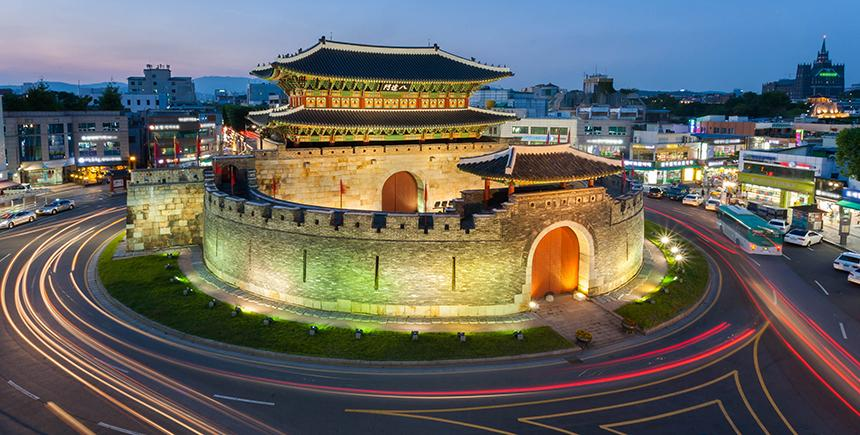
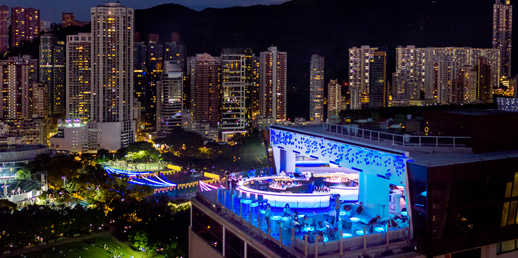

✯✯✯✯
I had the pleasure of eating in 4StarsMichelin when visiting Taipei in October. It's one of the top 50 restaurants in Asia and the best in Taiwan. This gave me of course very high expectations. I must say it also delivered on the promise. Everything from the excellent reception, the hip and elegant interior to the innovative food and wine pairing was top notch. The menu is contemporary fusion between all asian cuisine. Every dish was a delicious piece of art. The sommelier also paired every dish perfectly with special cocktails and they even had their own homemade boba flavor! After the dinner I was invited to the kitchen to meet up and thank the chef. A truly memorable and unique experience.
-- Calista Lo --
✯✯✯✯
We rushed to the restaurant right after a two-hour delay of our flight. They agreed to keep our reservation for some more time after we called them.
After we get seated, we start to enjoy the amazing lunch. All dishes were nicely and creatively presented. The chefs well-balanced the presentation and the taste of the food.
When we finished lunch, we needed to go to the hotel for check in. The staff were so warm and repeatedly checked with us to ensure we had the proper transportation.
Everything was so thoughtful - from the food to the customer services. No wonder that it got two Michelin stars!!
-- Samuel Lim --
✯✯✯✯
This is definitely the most difficult booking restaurant in Bangkok. Its service is excellent in the hospitality, dishes and background explanation & beyond expectation’s thoughtfulness that are given, waitress Sherrie is the one. There are many creativities throughout every dishes and local cultural experiences link nicely with its French cooking. The beauty of every dish is amazing. The restaurant’s deco is very memorable. We discussed it might be coming back more in ingredients flavors & core value of culinary art, but these comments will not change me to give great score on the amazing experience it has given me.
-- Longan Pan --

✯✯✯✯
We came here last month after reserving it for a month. This place is truly amazing and beyond comparison. words can't describe it so suggest you guys book one month in advance and go there to eat everything on the menu. It's truly the best in Asia and it will be harder to get in once more people hear about it.
-- Tatsuo Hayashi --
✯✯✯✯
One of the best meals we ever had. Creative, bite size fusion tasting menu, friendly and professional staff. Love their cocktail pairing. Pricey but worth it.
-- Arthur Hogue --
✯✯✯✯
This restaurant is very creative and uses a lot of special local ingredients. Taste was wonderful too. Need to book online in advance.
-- Michelle Toh --
✯✯✯✯
We come again for food tasting & gourmet journey and five senses inspiration. Again this season’s creation satisfied us a lot with not only creativity that makes local food into Korean gourmet shows that surprised us a lot but also the artistic presentation & great service spoiled us. The flavors, the culinary art & even a simple bread really pampered us. We took pictures, smelled deeply & ate slowly to enjoy this theater-like dining experience. Come here & you know what I am talking about
-- Joseph Phung --

✯✯✯✯
The best Michelin-starred restaurant ever in Taiwan. The ingredients are great and the dishes are all very creative with very beautiful presentations. Don't miss the baked bread and desserts which are extremely delicious!
-- Wendy Kao --
✯✯✯✯
After trying and failing to secure a reservation in 2017 when I last visited Hong Kong I finally managed to make a booking for March and was so glad we were able to go. This is haute cuisine up there with the best! We were lucky enough to dine on an evening when the special ingredient was black truffle, and when the amuse bouche of wagyu yakitori, foie gras and shaved black truffle came, I knew we were in for a good night! Expensive meal! If you can secure a booking, just do it. Would hundred percent recommend the cocktail pairings!
-- Sepherina Luong --